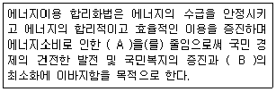

에너지관리기능사 (2016-07-10 기출문제)
1과목: 임의 구분
1. 비점이 낮은 물질인 수은, 다우섬 등을 사용하여 저압에서도 고온을 얻을 수 있는 보일러는?
- 관류식 보일러
- 열매체식 보일러
- 노통연관식 보일러
- 자연순환 수관식 보일러
(정답률: 71%)

2. 90℃의 물 1000kg에 15℃의 물 2000kg을 혼합시키면 온도는 몇 ℃가 되는가?
- 40
- 30
- 20
- 10
(정답률: 61%)
3. 보일러 효율 시험방법에 관한 설명으로 틀린 것은?
- 급수온도는 절탄기가 있는 것은 절탄기 입구에서 측정한다.
- 배기가스의 온도는 전열면의 최종 출구에서 측정 한다.
- 포화증기의 압력은 보일러 출구의 압력으로 부르돈관식 압력계로 측정한다.
- 증기온도의 경우 과열기가 있을 때는 과열기 입구에서 측정한다.
(정답률: 66%)
4. 보일러의 최고사용압력이 0.1MPa 이하일 경우 설치 가능한 과압방지 안전장치의 크기는?
- 호칭지름 5㎜
- 호칭지름 10㎜
- 호칭지름 15㎜
- 호칭지름 20㎜
(정답률: 60%)
5. 연관보일러에서 연관에 대한 설명으로 옳은 것은?
- 관의 내부로 열가스가 지나가는 관
- 관의 외부로 연소가스가 지나가는 관
- 관의 내부로 증기가 지나가는 관
- 관의 내부로 물이 지나가는 관
(정답률: 67%)
6. 고체연료에 대한 연료비를 가장 잘 설명한 것은?
- 고정탄소와 휘발분의 비
- 회분과 휘발분의 비
- 수분과 회분의 비
- 탄소와 수소의 비
(정답률: 66%)
7. 석탄의 함유 성분이 많을수록 연소에 미치는 영향에 대한 설명으로 틀린 것은?
- 수분 : 착화성 이 저하된다.
- 회분 : 연소 효율이 증가한다.
- 고정탄소 : 발열량이 증가한다.
- 휘발분 : 검은 매연이 발생하기 쉽다.
(정답률: 71%)
8. 다음 중 보일러의 손실열 중 가장 큰 것은?
- 연료의 불완전연소에 의한 손실열
- 노내 분입증기에 의한 손실열
- 과잉 공기에 의한 손실열
- 배기가스에 의한 손실열
(정답률: 69%)
9. 다음 중 수관식 보일러 종류가 아닌 것은?
- 다꾸마 보일러
- 가르베 보일러
- 야로우 보일러
- 하우덴 존슨 보일러
(정답률: 69%)
10. 어떤 보일러의 연소효율이 92%, 전열면 효율이 85%이면 보일러 효율은?
- 73.2%
- 74.8%
- 78.2%
- 82.8%
(정답률: 64%)
11. 원심형 송풍기에 해당하지 않는 것은?
- 터보형
- 다익형
- 플레이트형
- 프로펠러형
(정답률: 56%)
12. 보일러 수위제어 검출방식에 해당되지 않는 것은?
- 유속식
- 전극식
- 차압식
- 열팽창식
(정답률: 49%)
13. 보일러의 자동제어에서 제어량에 따른 조작량의 대상으로 옳은 것은?
- 증기온도 : 연소가스량
- 증기압력 : 연료량
- 보일러수위 : 공기량
- 노내압력 : 급수량
(정답률: 54%)
14. 화염 검출기에서 검출되어 프로텍터 릴레이로 전달된 신호는 버너 및 어떤 장치로 다시 전달되는가?
- 압력제한 스위치
- 저수위 경보장치
- 연료차단 밸브
- 안전밸브
(정답률: 67%)
15. 기체 연료의 특징으로 틀린 것은?
- 연소조절 및 점화나 소화가 용이하다.
- 시설비가 적게 들며 저장이나 취급이 편리하다.
- 회분이나 매연발생이 없어서 연소 후 청결하다.
- 연료 및 연소용 공기도 예열되어 고온을 얻을 수 있다.
(정답률: 72%)
16. 증기의 압력에너지를 이용하여 피스톤을 작동시켜 급수를 행하는 펌프는?
- 워싱턴 펌프
- 기어 펌프
- 볼류트 펌프
- 디퓨져 펌프
(정답률: 67%)
17. 유류 보일러 시스템에서 중유를 사용할 때 흡입측의 여과망 눈 크기로 적합한 것은?
- 1 ~ 10mesh
- 20 ~ 60mesh
- 100 ~ 150mesh
- 300 ~ 500mesh
(정답률: 64%)
18. 절탄기에 대한 설명으로 옳은 것은?
- 절탄기의 설치방식은 혼합식과 분배식이 있다.
- 절탄기의 급수예열 온도는 포화온도 이상으로 한다.
- 연료의 절약과 증발량의 감소 및 열효율을 감소시킨다.
- 급수와 보일러수의 온도차 감소로 열응력을 줄여준다.
(정답률: 52%)
19. 유류연소 버너에서 기름의 예열온도가 너무 높은 경우에 나타나는 주요 현상으로 옳은 것은?
- 버너 화구의 탄화물 축적
- 버너용 모터의 마모
- 진동, 소음의 발생
- 점화불량
(정답률: 66%)
20. 습증기의 엔탈피 hx를 구하는 식으로 옳은 것은? (단, h : 포화수의 엔탈피, x: 건조도, r : 증발잠열(숨은열), v : 포화수의 비체적)
- hx = h ＋ x
- hx = h ＋ r
- hx = h ＋ xr
- hx = v ＋ h ＋ xr
(정답률: 68%)
2과목: 임의 구분
21. 화염 검출기의 종류 중 화염의 이온화 현상에 따른 전기 전도성을 이용하여 화염의 유무를 검출하는 것은?
- 플래임로드
- 플래임아이
- 스택스위치
- 광전관
(정답률: 63%)
22. 비열이 0.6kcal/ kg.℃ 인 어떤 연료 30kg을 15℃에서 35℃까지 예열하고자 할 때 필요한열 량은 몇 kcal 인가?
- 180
- 360
- 450
- 600
(정답률: 60%)
23. 보일러 1마력을 열량으로 환산하면 약 몇 kcal/h 인가?
- 15.65
- 539
- 1078
- 8435
(정답률: 57%)
24. 다음 중 보일러수 분출의 목적 이 아닌 것은?
- 보일러수의 농축을 방지한다.
- 프라이밍, 포밍을 방지한다.
- 관수의 순환을 좋게 한다.
- 포화증기를 과열증기로 증기의 온도를 상승시킨다.
(정답률: 66%)
25. 대형보일러인 경우에 송풍기가 작동하지 않으면 전자밸브가 열리지 않고, 점화를 저지하는 인터록은?
- 프리퍼지 인터록
- 불착화 인터록
- 압력초과 인터록
- 저수위 인터록
(정답률: 66%)
26. 분진가스를 집전기내에 충돌시키거나 열가스의 흐름을 반전시켜 급격한 기류의 방향전환에 의해 분진을 포집하는 집진장치는?
- 중력식 집진장치
- 관성력식 집진장치
- 사이클론식 집진장치
- 멀티사이클론식 집진장치
(정답률: 58%)
27. 가압수식을 이용한 집 진장치가 아닌 것은?
- 제트 스크러버
- 충격식 스크러버
- 벤튜리 스크러버
- 사이클론 스크러버
(정답률: 53%)
28. 보일러 부속장치에서 연소가스의 저온부식과 가장 관계가 있는 것은?
- 공기예열기
- 과열기
- 재생기
- 재열기
(정답률: 61%)
29. 비교적 많은 동력이 필요하나 강한 통풍력을 얻을 수 있어 통풍저항이 큰 대형 보일러나 고성능 보일러에 널리 사용되고 있는 통풍 방식은?
- 자연통풍 방식
- 평형통풍 방식
- 직접흡입 통풍 방식
- 간접흡입 통풍 방식
(정답률: 60%)
30. 보일러 강판의 가성취화 현상의 특징에 관한 설명으로 틀린 것은?
- 고압보일러에서 보일러수의 알칼리 농도가 높은 경우에 발생한다.
- 발생하는 장소로는 수면상부의 리벳과 리벳 사이에 발생하기 쉽다.
- 발생하는 장소로는 관구멍 등 응력이 집중하는 곳의 틈이 많은 곳이다.
- 외견상 부식성이 없고, 극히 미세한 불규칙적인 방사상 형태를 하고 있다.
(정답률: 54%)
31. 급수 중 불순물에 의한 장해나 처리방법에 대한 설명으로 틀린 것은?
- 현탁고형물의 처리방법에는 침강분리, 여과, 응집침전 등이 있다.
- 경도성분은 이온 교환으로 연화시킨다.
- 유지류는 거품의 원인이 되나, 이온교환수지의 능력을 향상시킨다.
- 용존산소는 급수계통 및 보일러 본체의 수관을 산화 부식시킨다.
(정답률: 64%)
32. 보일러 전열면의 과열 방지대책으로 틀린 것은?
- 보일러내의 스케일을 제거한다.
- 다량의 불순물로 인해 보일러수가 농축되지 않게 한다.
- 보일러의 수위가 안전 저수면 이하가 되지 않도록 한다.
- 화염을 국부적으로 집중 가열한다.
(정답률: 75%)
33. 중력환수식 온수난방법의 설명으로 틀린 것은?
- 온수의 밀도차에 의해 온수가 순환한다.
- 소규모 주택에 이용된다.
- 보일러는 최하위 방열기보다 더 낮은 곳에 설치한다.
- 자연순환이므로 관경을 작게 하여도 된다.
(정답률: 63%)
34. 증기난방에서 환수관의 수평 배관에서 관경이 가늘어 지는 경우 편심 리듀서를 사용하는 이유로 적합한 것은?
- 응축수의 순환을 억제하기 위해
- 관의 열팽창을 방지하기 위해
- 동심 리듀셔보다 시공을 단축하기 위해
- 응축수의 체류를 방지하기 위해
(정답률: 63%)
35. 온수난방 설비의 밀폐식 팽창탱크에 설치되지 않는 것은?
- 수위계
- 압력계
- 배기관
- 안전밸브
(정답률: 57%)
36. 다른 보온재에 비하여 단열 효과가 낮으며, 500℃ 이하의 파이프, 탱크, 노벽 등에 사용하는 보온재는?
- 규조토
- 암면
- 기포성수지
- 탄산마그네슘
(정답률: 64%)
37. 압력배관용 탄소강관의 KS 규격기호는?
- SPPS
- SPLT
- SPP
- SPPH
(정답률: 62%)
38. 보일러성능시험에서 강철제 증기보일러의 증기건도는 몇 % 이상이어야 하는가?
- 89
- 93
- 95
- 98
(정답률: 64%)
39. 난방설비 배관이나 방열기에서 높은 위치에 설치해야 하는 밸브는?
- 공기빼기 밸브
- 안전밸브
- 전자밸브
- 플로트 밸브
(정답률: 70%)
40. 온수온돌의 방수처리에 대 한 설명으로 적절하지 않은 것은?
- 다층건물에 있어서도 전층의 온수온돌에 방수처리를 하는 것이 좋다.
- 방수처리는 내식성이 있는 루핑, 비닐, 방수몰탈로 하며, 습기가 스며들지 않도록 완전히 밀봉한다.
- 벽면으로 습기가 올라오는 것을 대비하여 온돌바닥보다 약 10 cm 이상 위까지 방수처리를 하는 것이 좋다.
- 방수처리를 함으로써 열손실을 감소시킬 수 있다.
(정답률: 57%)
3과목: 임의 구분
41. 기름보일러에서 연소 중 화염이 점멸 하는 등 연소 불안정이 발생하는 경우가 있다. 그 원인으로 가장 거리가 먼 것은?
- 기름의 점도가 높을 때
- 기름 속에 수분이 혼입되었을 때
- 연료의 공급 상태가 불안정한 때
- 노내가 부압(負壓)인 상태에서 연소했을 때
(정답률: 61%)
42. 진공환수식 증기난방 배관시공에 관한 설명으로 틀린 것은?
- 증기주관은 흐름 방향에 1/200〜1/300의 앞내림 기울기로 하고 도중에 수직 상향부가 필요한 때 트랩장치를 한다.
- 방열기 분기관 등에서 앞단에 트랩장치가 없을 때에는 1/50〜1/100의 앞올림 기울기로 하여 응축수를 주관에 역류시킨다.
- 환수관에 수직 상향부가 필요한 때에는 리프트 피팅을 써서 응축수가 위쪽으로 배출되게 한다.
- 리프트 피팅은 될 수 있으면 사용개소를 많게 하고 1단을 2.5m 이내로 한다.
(정답률: 58%)
43. 어떤 강철제 증기보일러의 최고사용압력이 0.35 MPa이면 수압시험 압력은?
- 0.35 MPa
- 0.5 MPa
- 0.7 MPa
- 0.95 MPa
(정답률: 66%)
44. 전열면적 12m2인 보일러의 급수밸브의 크기는 호칭 몇 A 이상이어야 하는가?
- 15
- 20
- 25
- 32
(정답률: 56%)
45. 배관의 관 끝을 막을 때 사용하는 부품은?
- 엘보
- 소켓
- 티
- 캡
(정답률: 76%)
46. 보온재의 열전도율과 온도와의 관계를 맞게 설명한 것은?
- 온도가 낮아질수록 열전도율은 커진다.
- 온도가 높아질수록 열전도율은 작아진다.
- 온도가 높아질수록 열전도율은 커진다.
- 온도에 관계없이 열전도율은 일정하다.
(정답률: 65%)
47. 보일러에서 발생한 증기를 송기할 때의 주의사항으로 틀린 것은?
- 주증기관 내의 응축수를 배출시킨다.
- 주증기 밸브를 서서히 연다.
- 송기한 후에 압력계의 증기압 변동에 주의 한다.
- 송기한 후에 밸브의 개폐상태에 대한 이상 유무를 점검하고 드레인 밸브를 열어 놓는다,
(정답률: 67%)
48. 실내의 천장 높이가 12m인 극장에 대한 증기난방 설비를 설계 하고자 한다. 이때의 난방부하 계산을 위한 실내 평균온도는? (단, 호흡선 1.5m에서의 실내온도는 18℃ 이다.)
- 23.5 V
- 26.1℃
- 29.8℃
- 32.7 V
(정답률: 47%)
49. 난방부하가 2250kcal/ h인 경우 온수방열기의 방열면적은? (단, 방열기의 방열량은 표준방열량으로 한다.)
- 3.5m2
- 4.5m2
- 5.0m2
- 8.3m2
(정답률: 57%)
50. 보일러의 내부 부식에 속하지 않는 것은?
- 점식
- 구식
- 알칼리 부식
- 고온 부식
(정답률: 53%)
51. 보일러 사고의 원인 중 보일러 취급상의 사고원인이 아닌 것은?
- 재료 및 설계불량
- 사용압력초과 운전
- 저수위 운전
- 급수처리 불량
(정답률: 70%)
52. 증기 트랩을 기계식, 온도조절식, 열역학적 트랩으로 구분할 때 온도조절식 트랩에 해당하는 것은?
- 버킷 트랩
- 플로트 트랩
- 열동식 트랩
- 디스크형 트랩
(정답률: 62%)
53. 배관 중간이나 밸브, 펌프, 열교환기 등의 접속을 위해 사용되는 이음쇠로서 분해, 조립이 필요한 경우에 사용 되는 것은?
- 벤드
- 리듀셔
- 플랜지
- 슬리브
(정답률: 65%)
54. 글랜드 패킹의 종류에 해당하지 않는 것은?
- 편조 패킹
- 액상 합성수지 패킹
- 플라스틱 패킹
- 메탈 패킹
(정답률: 57%)
55. 다음 에너지이용 합리화법의 목적에 관한 내용이다. ( )안의 A, B에 각각 들어갈 용어로 옳은 것은?

- A = 환경파괴, B = 온실가스
- A = 자연파괴, B = 환경피해
- A = 환경피해, B = 지구온난화
- A = 온실가스배출, B = 환경파괴
(정답률: 64%)
56. 에너지법에 따라 에너지기술개발 사업비의 사업에 대한 지원항목에 해당되지 않는 것은?
- 에너지기술의 연구·개발에 관한 사항
- 에너지기술에 관한 국내협력에 관한 사항
- 에너지기술의 수요조사에 관한 사항
- 에너지에 관한 연구인력 양성에 관한 사항
(정답률: 51%)
57. 에너지이용 합리화법에 따라 검사에 합격되지 아니한 검사대상기기를 사용한 자에 대한 벌칙은?
- 6개월 이하의 징역 또는 5백만원 이하의 벌금
- 1년 이하의 징역 또는 1천만원 이하의 벌금
- 2년 이하의 징역 또는 2천만원 이하의 벌금
- 3년 이하의 징역 또는 3천만원 이하의 벌금
(정답률: 69%)
58. 에너지이용 합리화법상 시공업자단체의 설립, 정관의 기재 사항과 감독에 관하여 필요한 사항은 누구의 령으로 정하는가?
- 대통령령
- 산업통상자원부령
- 고용노동부령
- 환경부령
(정답률: 56%)
59. 에너지이용 합리화법에 따라 고효율 에너지 인증대상 기자재에 포함되지 않는 것은?
- 펌프
- 전력용 변압기
- LED 조명기기
- 산업건물용 보일러
(정답률: 55%)
60. 에너지 이용 합리화법 상 열사용기 자재가 아닌 것은?
- 강철제보일러
- 구멍탄용 온수보일러
- 전기순간온수기
- 2종 압력용기
(정답률: 54%)